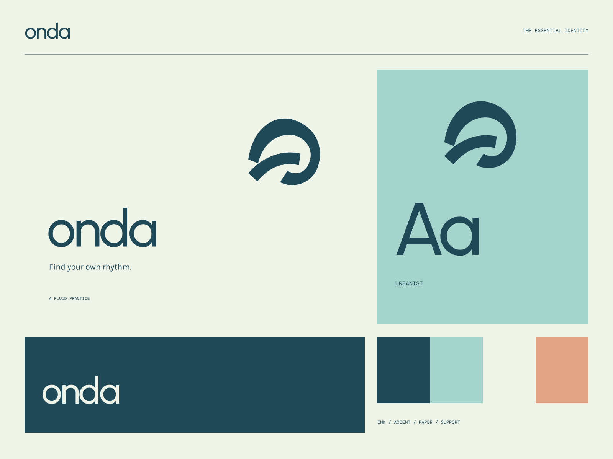

01 / Practice
Begin where you are
A practice that makes space for your own pace.
Edition 02 / the working component system
Use the classes in this reference and the exact values in theme.json. These components inherit this identity's fonts, colors, proportions, and controls.
Display / urbanist
Find your own rhythm.
Reading text is 16px with a 1.7 line height and a maximum line length of 65 characters. A useful hierarchy is a first-class part of the system.
A fluid practiceDeep water#204958
Sea glass#A4D4CB
Foam#EFF4E8
Shell#E1A484
Ink on paper and ink on accent are approved normal-text pairings. Support color is a decorative surface until a specific text pairing is checked.
Buttons are at least 48px tall. Focus is visible. Keep existing handlers, links, and form behavior when applying the theme.
01 / Practice
A practice that makes space for your own pace.
02 / The studio
Movement, breath, and consistency over perfection.
03 / Notes on movement
A calm, thoughtful place to connect with yourself.
| Element | Value | Purpose |
|---|---|---|
| Spacing unit | 4px | A consistent compositional rhythm |
| Body text | 16px / 1.7 | Comfortable, readable content |
| Controls | 48px minimum | Useful touch and keyboard targets |
Download the complete kit. Read INSTALL.md, run install-theme.mjs against your project, and attach the exact data-openform attribute to your root or intended subtree.
Yes. Use theme.css and map your components to the provided of-* classes. Preserve your routes, application data, interactions, and actual business content.
